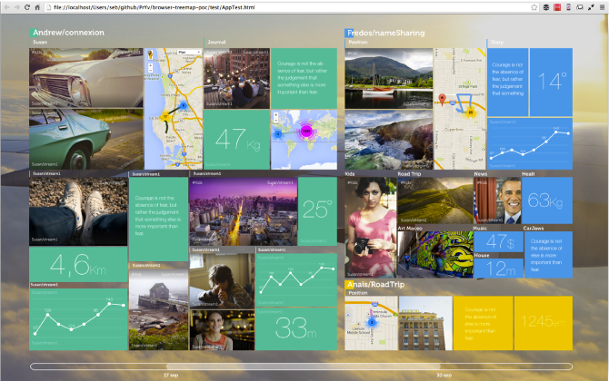

Everybody seems to be out to collect users data with cool apps and devices—not least in the soaring quantified self bubble—but what’s next?
Data streams from heterogeneous sources need to reunite, and users must be in control.
We have a platform for that.
Collect data and/or build meaning across multiple streams, whatever their source. Personal health metrics, location, pictures, audio, notes, activities, videos, vegetable garden yields, you name it: if it’s got a time, it can be a Pryv event. With an open directory of event types, you set the limits (and you still get data validation).
Each event is contextualized into streams and possibly tags.
GET /events?auth={token} HTTP/1.1
Host: {user}.pryv.io
Accept: application/json[
{
"id": "eVtfMXZYcf",
"time": 1369143391.115,
"type": "temperature/c",
"content": 27.7
},
{
"id": "VVYWXa3NLf",
"time": 1369140027.36,
"type": "position/wgs84",
"content": { "latitude": 46.517699, "longitude": 6.562671 }
},
...
]We provide SDKs for major platforms and example apps.
You own and control your data, including where it’s hosted. Our extensible browser webapp lets you view and navigate your streams in context. (As a developer, those streams could include your apps’ collected stats.)
All data is private by default, and each user’s data is stored separately. You decide what to share (context) and how (read or contribute).
We work to help build a more open and responsible web.
Our platform will sustain and thrive with our users’ support, not advertisers’
We commit to keeping our plans public—no hidden agenda, no fishy terms and conditions
All of our code will be progressively open-sourced on GitHub.